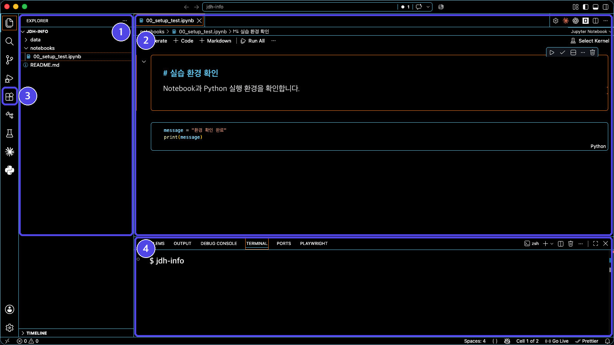
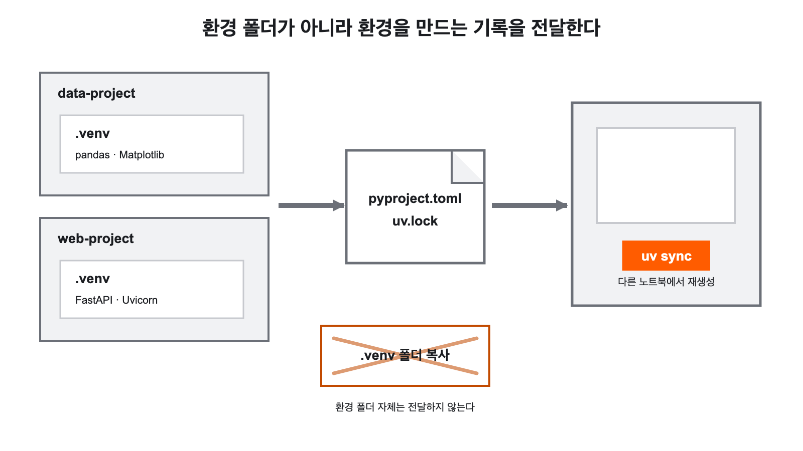
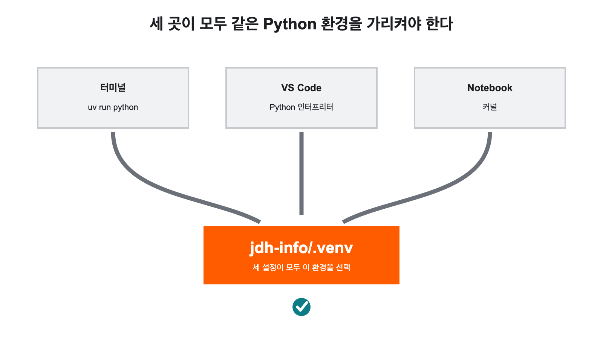

Python 실습
환경 준비하기准备 Python
实践环境
Python 코드와 AI 도구가 돌아가는 환경을 손으로 만들어 봅니다.从一台什么都没装的笔记本开始，
亲手搭出能跑 Python 代码和 AI 工具的环境。
왜 이 실습이 필요한가为什么需要这次实践
인터넷에서 “Python 설치 방법”을 검색해 안내대로 따라 합니다. 설치가 끝났다는 화면이 뜹니다. 그런데 코드를 실행하려니 “찾을 수 없습니다”라는 메시지가 나옵니다.在网上搜“Python 安装方法”，照着指引做完了。屏幕显示安装完成。可一要运行代码，却弹出“找不到”。
다시 검색합니다. 이번에는 다른 블로그의 방법으로 뭔가를 또 설치합니다. 이제는 실행은 되는데, 어제 잘 되던 다른 코드가 안 됩니다. 무엇을 설치했는지, 지금 어느 Python이 돌아가는지 이미 알 수 없게 되었습니다.再搜一次。这回按另一个博客的方法又装了点什么。现在能跑了，可昨天好好的另一段代码又不行了。装过什么、现在跑的是哪个 Python，已经说不清了。
이 상황은 실력이 부족해서 생기는 것이 아닙니다. 각 도구가 무슨 역할을 하는지 모르는 채로 설치했기 때문에 생깁니다.这种局面不是因为水平不够，而是因为在不知道每个工具各管什么的情况下就装了。
설치 명령을 외우는 것이 아니라, 각 도구가 왜 필요하며 내 코드와 AI 도구가 정확히 어떤 환경에서 실행되는지 설명할 수 있게 되는 것이 목표다. 여기에 더해 uv sync·uv add·uv run의 역할을 구분할 수 있어야 한다.目标不是背下安装命令，而是能说清每个工具为什么需要，以及我的代码和 AI 工具究竟在什么样的环境里运行。此外还要能区分 uv sync、uv add、uv run 的职责。
- VS Code는 편집기, Python은 실행기, 확장은 연결, Jupyter는 기록, uv는 환경 관리를 맡는다.VS Code 管编辑，Python 管执行，扩展管连接，Jupyter 管记录，uv 管环境管理。
- 확장을 설치했다고 Python 자체가 생기는 것은 아니다.装了扩展并不等于就有了 Python 本身。
- 사람이 쓴 코드는 번역 과정을 거쳐 운영체제가 마련한 환경에서 실행된다.人写的代码要经过翻译过程，在操作系统备好的环境中运行。
왜 이 실습이 필요한가为什么需要这次实践(이어서)（续）
오늘 끝나면 이렇게 됩니다今天结束时会是这样
- Notebook 셀을 실행하면 결과가 바로 아래 나온다运行 Notebook 单元格，结果就出现在正下方
- 일부러 낸 오류를 읽고 스스로 고칠 수 있다能读懂自己故意造出的报错并自行修好
.py파일을 실행해 터미널에서 결과를 본다运行.py文件，在终端里看到结果- AI 도구가 내 프로젝트 파일을 읽고 설명해 준다AI 工具能读我的项目文件并加以说明
- 지금 어느 Python이 내 코드를 실행하는가现在是哪个 Python 在跑我的代码
- 가상환경이 왜 필요한가为什么需要虚拟环境
.venv·pyproject.toml·uv.lock의 차이.venv、pyproject.toml、uv.lock的区别- AI에게 넣으면 안 되는 정보는 무엇인가哪些信息不能输入给 AI
오늘 준비할 도구와 각자의 역할今天要装的工具和各自的职责 핵심核心
여섯 가지를 설치합니다. 많아 보이지만 역할이 겹치지 않습니다. 하나씩 왜 필요한지 알고 넘어가면 나중에 문제가 생겼을 때 어디를 봐야 할지 알 수 있습니다.要装六样。看着多，但职责互不重叠。逐个弄清为什么需要，日后出问题时就知道该看哪里。
VS Code ← 작업 공간
├─ 편집기 파일과 코드를 읽고 고친다
├─ 터미널 명령을 실행한다
├─ Python 확장 Python 실행 환경을 연결한다
└─ Jupyter 확장 Notebook 화면과 셀 실행
Node.js와 npm ← AI 도구의 기반
├─ JavaScript를 브라우저 밖에서 실행하는 환경
└─ npm으로 OpenCode를 설치한다
OpenCode ← AI 코딩 도구
└─ 프로젝트 파일을 읽고 수정한다
uv ← 환경 관리
├─ Python 설치와 버전 관리
├─ 프로젝트의 가상환경 생성
└─ 라이브러리 설치와 버전 기록
.venv의 Python과 Jupyter 커널 ← 실제 실행
└─ Python 코드와 Notebook 셀을 실행한다순서에 이유가 있습니다. OpenCode를 설치하려면 Node.js가 먼저 있어야 하고, Python 코드를 실행하려면 Python이 있어야 합니다. 그리고 Python은 직접 설치하지 않고 uv에게 맡깁니다. 그러면 학생마다 Python 버전이 달라지는 일을 줄일 수 있습니다.顺序是有理由的。要装 OpenCode 就得先有 Node.js，要运行 Python 代码就得有 Python。而 Python 不自己装，交给 uv。这样能减少每个同学 Python 版本各不相同的情况。
오늘 준비할 도구와 각자의 역할今天要装的工具和各自的职责 핵심核心(이어서)（续）
지우고 다시 깔지 마세요. 먼저 버전 확인 명령만 실행해서 이미 있는지 확인하고, 있으면 그 단계를 건너뜁니다. 각 단계마다 확인 명령을 함께 적어 두었습니다.不要卸载重装。先只执行查看版本的命令确认是否已有，有就跳过那一步。每一步都附了确认命令。
준비 상태 확인确认准备状态 실습实践
설치를 시작하기 전에 다음을 교사와 함께 확인합니다. 여기서 막히면 뒤의 모든 단계가 막힙니다.开始安装前，和老师一起确认以下各项。这里卡住，后面所有步骤都会卡住。
- 수업용 노트북에 로그인했다.已登录课堂用笔记本电脑。
- 수업 자료 폴더의 위치를 찾았다.找到了课程资料文件夹的位置。
- 학교 Wi-Fi에 연결되어 있다.已连上学校 Wi-Fi。
- 프로그램을 설치할 권한이 있는지 확인했다.确认了是否有安装程序的权限。
- 이미 설치된 프로그램이 있다면 먼저 버전을 확인했다.若已装过某些程序，先查看了它们的版本。
- 저장공간이 충분히 남아 있다.剩余存储空间足够。
오늘부터 AI 도구를 쓰기 시작합니다. 다음은 어떤 AI 서비스에도 입력하지 않습니다.从今天起要开始用 AI 工具。以下内容不输入给任何 AI 服务。
- 학교 계정의 비밀번호学校账号的密码
- 전화번호, 주소, 주민등록번호电话号码、住址、身份证号
- 다른 사람의 개인정보他人的个人信息
- API 키와 인증 토큰API 密钥与认证令牌
실습 파일에도 실제 개인정보 대신 가상의 이름과 값을 씁니다. 이 교과서의 예시에 나오는 이름도 모두 가상입니다.实践文件里也用虚构的名字和数值，而不是真实个人信息。本书示例中出现的名字也都是虚构的。
학교 정책으로 설치가 막혀 있을 수 있습니다. 그럴 때 보안 설정을 우회하려고 시도하지 않습니다. 교사나 학교 담당자에게 요청하는 것이 올바른 절차입니다. 우회는 문제를 해결하는 것이 아니라 옮기는 것입니다.学校策略可能禁止安装。这时不要试图绕过安全设置。向老师或学校负责人提出请求，才是正确的做法。绕过不是解决问题，只是把问题挪个地方。
설치 명령을 입력할 PowerShell输入安装命令的 PowerShell 실습实践
프로그램을 설치하는 방법은 두 가지입니다. 창과 버튼을 눌러 진행하는 GUI(graphical user interface, 그래픽 사용자 인터페이스) 방식과, 글자로 명령을 입력하는 CLI(command-line interface, 명령 줄 인터페이스) 방식입니다.安装程序有两种办法：点窗口和按钮进行的 GUI（graphical user interface，图形用户界面）方式，以及用文字敲命令的 CLI（command-line interface，命令行界面）方式。
이번 수업에서는 CLI를 주로 씁니다. 명령이 문장이라서 설치 과정과 결과를 그대로 기록할 수 있고, 모든 학생이 똑같은 문장을 실행할 수 있기 때문입니다. 버튼을 눌러 설치하면 무엇을 눌렀는지 남지 않습니다.本课主要用 CLI。因为命令是句子，安装过程和结果可以原样记录下来，而且所有同学都能执行一模一样的句子。用按钮安装的话，按了什么并不会留下来。
- 키보드의
Win키를 누른다.按键盘上的Win键。 powershell을 검색한다.搜索powershell。- Windows PowerShell 또는 Terminal을 연다.打开 Windows PowerShell 或 Terminal。
- 다음 명령을 입력하고
Enter를 누른다.输入下面的命令并按Enter。PowerShellPowerShellecho hello hello가 나타나면 명령을 실행할 수 있는 상태다.出现hello，就说明可以执行命令了。
설치 명령을 입력할 PowerShell输入安装命令的 PowerShell 실습实践(이어서)（续）
먼저 익힐 다섯 개의 명령先掌握的五条命令
| 명령命令 | 뜻含义 |
|---|---|
pwd | 지금 터미널이 어느 폴더에 있는지 확인한다.查看当前终端处在哪个文件夹。 |
ls | 현재 폴더 안의 파일과 폴더를 본다.查看当前文件夹里的文件和子文件夹。 |
cd 폴더이름cd 文件夹名 | 지정한 폴더 안으로 들어간다.进入指定的文件夹。 |
cd .. | 한 단계 위 폴더로 나간다.退到上一级文件夹。 |
code . | 현재 폴더 전체를 VS Code로 연다.用 VS Code 打开整个当前文件夹。 |
pwd를 습관으로把 pwd 变成习惯설치나 프로젝트 명령을 실행하기 전에 pwd로 위치를 확인하세요. 같은 명령도 어느 폴더에서 실행했는지에 따라 결과가 달라집니다. 뒤에서 uv sync를 실행할 때 이 습관이 특히 중요해집니다.执行安装或项目命令之前，先用 pwd 确认位置。同一条命令，在哪个文件夹里执行，结果会不一样。后面执行 uv sync 时，这个习惯尤其重要。
winget은 Windows의 프로그램 설치 도구winget 是 Windows 的程序安装工具winget install 프로그램ID는 지정한 프로그램을 찾아 설치합니다. 앞으로 나올 설치 명령 대부분이 이 형태입니다. 학교 정책으로 winget을 쓸 수 없다면 우회하지 말고 교사에게 요청합니다.winget install 程序 ID 会找到并安装指定的程序。后面出现的安装命令大多是这个形式。若学校策略禁用 winget，不要绕过，请向老师提出。
VS Code와 필수 확장 설치安装 VS Code 与必需扩展 실습实践
4.1 VS Code 설치4.1 安装 VS Code
winget install --id Microsoft.VisualStudioCode -e설치가 끝나면 PowerShell을 닫았다가 다시 열고 확인합니다. 새로 열어야 하는 이유는, 프로그램이 설치되면서 바뀐 설정을 이미 열려 있던 창은 모르기 때문입니다.安装完成后，把 PowerShell 关掉再重新打开后确认。之所以要重开，是因为程序安装时改动的设置，已经开着的窗口并不知道。
code --version버전 번호가 나타나면 설치된 것입니다. 명령이 인식되지 않으면 VS Code와 터미널을 완전히 종료한 뒤 다시 엽니다. winget을 쓸 수 없다면 VS Code 공식 다운로드를 이용합니다.出现版本号就说明装好了。若命令无法识别，请把 VS Code 和终端完全退出再打开。若无法使用 winget，请用 VS Code 官方下载。
4.2 VS Code에서 쓸 네 곳4.2 VS Code 里要用的四处
VS Code에는 수많은 버튼이 있지만, 이 수업에서 쓰는 곳은 네 군데뿐입니다.VS Code 上按钮无数，但这门课只用到四个地方。
VS Code와 필수 확장 설치安装 VS Code 与必需扩展 실습实践(이어서)（续）
| 위치位置 | 하는 일做什么 |
|---|---|
| 탐색기 Explorer资源管理器 Explorer | 프로젝트의 파일과 폴더를 열고 관리한다.打开并管理项目的文件与文件夹。 |
| 편집기 Editor编辑器 Editor | Markdown, Python과 웹 코드를 읽고 수정한다.阅读并修改 Markdown、Python 和网页代码。 |
| 확장 Extensions扩展 Extensions | Python·Jupyter 같은 추가 기능을 설치한다.安装 Python、Jupyter 之类的附加功能。 |
| 터미널 Terminal终端 Terminal | uv와 OpenCode 명령을 실행한다.执行 uv 和 OpenCode 命令。 |
터미널은 메뉴의 터미널 → 새 터미널 또는 Ctrl + ` 로 엽니다.终端从菜单的터미널 → 새 터미널（终端 → 新建终端），或按 Ctrl + ` 打开。

VS Code와 필수 확장 설치安装 VS Code 与必需扩展 실습实践(이어서)（续）
4.3 필수 확장 두 개4.3 两个必需扩展
왼쪽의 확장 아이콘을 누르거나 Ctrl+Shift+X를 누릅니다. 이름이 비슷한 확장이 많으므로 게시자도 함께 확인합니다.点左侧的扩展图标，或按 Ctrl+Shift+X。名字相近的扩展很多，请连发布者一并确认。
| 표시 이름显示名称 | 게시자发布者 | 이번 수업의 역할在本课中的职责 |
|---|---|---|
| Python | Microsoft | Python 실행 환경 선택과 코드 실행选择 Python 运行环境并执行代码 |
| Jupyter | Microsoft | .ipynb Notebook 열기와 셀 실행打开 .ipynb Notebook 并运行单元格 |
Korean Language Pack은 메뉴를 한국어로 보고 싶을 때 선택해서 설치합니다. Live Server는 이후 정적 웹페이지 실습에서 필요할 때 추가하며, Python Notebook 실행에는 필요하지 않습니다.想把菜单看成韩语时，可自行安装 Korean Language Pack。Live Server 等到之后做静态网页实践时再按需添加，运行 Python Notebook 并不需要它。
Node.js 설치安装 Node.js 실습实践
다음에 설치할 AI 코딩 도구 OpenCode는 npm이라는 도구로 설치합니다. 그리고 npm을 쓰려면 Node.js가 먼저 있어야 합니다. 그래서 순서가 이렇습니다.接下来要装的 AI 编程工具 OpenCode，是用 npm 这个工具安装的。而要用 npm，就得先有 Node.js。顺序因此如此。
JavaScript를 브라우저 밖에서도 실행하는 환경입니다. 원래 JavaScript는 웹페이지 안에서만 돌았는데, Node.js가 나오면서 일반 프로그램처럼 쓸 수 있게 됐습니다.它是让 JavaScript 在浏览器之外也能运行的环境。JavaScript 原本只在网页里跑，有了 Node.js 之后就能当普通程序用了。
Node.js 도구와 라이브러리를 설치하는 패키지 관리자입니다. Node.js를 설치하면 함께 들어옵니다.它是安装 Node.js 工具与库的包管理器。装了 Node.js 就会一并带来。
이 수업에서는 여러 Node.js 버전을 바꿔 쓰지 않습니다. OpenCode를 실행하는 데 필요한 LTS(Long Term Support, 장기 지원 버전) 하나만 설치합니다.本课不会在多个 Node.js 版本之间切换，只装运行 OpenCode 所需的 LTS（Long Term Support，长期支持版）一个。
winget install --id OpenJS.NodeJS.LTS -e설치가 끝나면 PowerShell과 VS Code를 모두 닫았다가 다시 엽니다. 그다음 두 명령으로 확인합니다.安装完成后，把 PowerShell 和 VS Code 都关掉再重新打开。然后用两条命令确认。
node --version
npm --versionnode와 npm의 버전 번호가 모두 나타나면 준비된 것입니다. winget을 쓸 수 없다면 Node.js 공식 다운로드에서 LTS를 선택하고 교사의 안내를 따릅니다.node 和 npm 的版本号都出现，就说明准备好了。若无法使用 winget，请到 Node.js 官方下载选 LTS，并按老师的指引安装。
Node.js 설치安装 Node.js 실습实践(이어서)（续）
실제 개발에서는 프로젝트마다 요구하는 Node.js 버전이 달라서 nvm 같은 버전 관리 도구를 쓰기도 합니다. 이번 수업에서는 LTS 하나만 쓰므로 설치 과정에 넣지 않았습니다. “이런 것이 있다” 정도만 알아 두면 됩니다.实际开发中各项目要求的 Node.js 版本不同，所以也会用 nvm 这类版本管理工具。本课只用一个 LTS，所以没放进安装流程。知道“有这么个东西”就行。
CMD에서는 되는데 VS Code의 PowerShell 터미널에서 npm.ps1 cannot be loaded because running scripts is disabled 같은 오류가 날 수 있습니다. 이 오류가 실제로 나타났을 때만 교사의 안내에 따라 다음을 한 번 실행합니다.CMD 里可以，VS Code 的 PowerShell 终端里却报 npm.ps1 cannot be loaded because running scripts is disabled 之类的错。只有真的出现这个报错时，才按老师的指引执行一次下面的命令。
Set-ExecutionPolicy -Scope CurrentUser -ExecutionPolicy RemoteSigned확인 질문이 나오면 내용을 읽고 Y를 입력한 뒤 터미널을 닫았다 새로 엽니다. CurrentUser는 지금 로그인한 사용자에게만 적용되고, RemoteSigned는 내가 만든 스크립트는 허용하되 인터넷에서 받은 것에는 서명을 요구하는 정책입니다. 범위가 더 넓은 LocalMachine이나 제한을 크게 낮추는 Unrestricted는 쓰지 않습니다.出现确认提问时，读一遍内容并输入 Y，然后关掉终端重新打开。CurrentUser 只对当前登录的用户生效，RemoteSigned 则是允许自己写的脚本，但要求从网上下载的脚本带签名的策略。范围更大的 LocalMachine 和大幅放宽限制的 Unrestricted 都不用。
학교 그룹 정책이 우선하도록 설정되어 있으면 이 명령이 적용되지 않을 수 있습니다. 그때는 정책을 반복해 우회하지 말고 PowerShell에서 npm.cmd·opencode.cmd를 쓰거나 CMD에서 실행합니다.若学校的组策略被设为优先，这条命令可能不生效。那时不要反复绕过策略，请在 PowerShell 里用 npm.cmd、opencode.cmd，或在 CMD 里执行。
OpenCode 설치安装 OpenCode 실습实践
- 현상现象
- Gemini에게 코드를 물으면 답을 글로 보여 줍니다. 그것을 내가 복사해서 파일에 붙여 넣어야 합니다. 파일이 여러 개면 이 과정이 번거롭습니다.问 Gemini 要代码，它把答案用文字显示出来，我得复制粘贴到文件里。文件一多，这个过程就很烦。
- 쉬운 설명通俗说法
- 답만 알려 주는 것이 아니라, 허락한 폴더 안의 파일을 직접 읽고 고쳐 주는 AI 도구입니다.它不只告诉你答案，还能直接读取并修改你允许的文件夹里的文件的 AI 工具。
- 정확한 정의准确定义
- 지정된 작업 공간에서 파일 읽기·생성·수정 같은 동작을 수행하며 사용자의 요청을 처리하는 AI 프로그램.在指定的工作空间中执行读取、创建、修改文件等操作，以处理用户请求的 AI 程序。
- 경계边界
- ‘질문에 답하는 챗봇’보다 권한이 큽니다. 그래서 어느 폴더에서 실행하는지가 중요합니다. 실행한 폴더가 곧 AI가 손댈 수 있는 범위입니다.它的权限比“回答问题的聊天机器人”大。所以在哪个文件夹里运行很关键。运行所在的文件夹，就是 AI 能动手的范围。
- 문장 속 사용例句
- “연습 폴더에서만 OpenCode를 실행해서 파일을 읽게 했다.”“我只在练习文件夹里运行 OpenCode，让它读文件。”
OpenCode 공식 문서가 안내하는 npm 설치 명령을 실행합니다.执行 OpenCode 官方文档给出的 npm 安装命令。
npm install -g opencode-ai
opencode --version버전 번호가 나타나면 설치된 것입니다.出现版本号就说明装好了。
OpenCode 설치安装 OpenCode 실습实践(이어서)（续）
OpenCode는 반드시 작업할 프로젝트 폴더를 VS Code로 연 뒤, 그 폴더의 터미널에서 실행합니다. 아무 데서나 실행하면 의도하지 않은 폴더의 파일을 다룰 수 있습니다. 실행 전에 pwd로 위치를 확인하는 습관을 여기서 씁니다.OpenCode 必须先用 VS Code 打开要作业的项目文件夹，再在那个文件夹的终端里运行。随便在哪儿运行，它就可能碰到你没打算给它的文件夹。运行前用 pwd 确认位置的习惯，在这里派上用场。
opencodeAI 모델 연결하기连接 AI 模型 실습实践
여기서 헷갈리기 쉬운 구분이 하나 있습니다. OpenCode는 도구이고, 실제 답변과 코드를 만드는 AI 모델은 따로 연결해야 합니다. 자동차와 연료의 관계에 가깝습니다.这里有一个容易混的区分：OpenCode 是工具，而真正生成回答和代码的 AI 模型要另外连接。类似汽车和燃料的关系。
- OpenCode 안에서
/connect를 입력한다.在 OpenCode 中输入/connect。 - 수업에서 지정한 제공자를 선택한다.选择课上指定的提供方。
- 화면에 표시된 공식 인증 주소에서 안내에 따라 연결한다.在屏幕显示的官方认证网址上按提示完成连接。
/models를 입력하여 교사가 수업 전에 검증한 모델을 선택한다.输入/models，选择老师课前验证过的模型。
무료 모델의 이름, 제공 기간과 사용 한도는 수시로 바뀝니다. 그래서 이 교과서에는 특정 모델 이름을 적지 않았습니다. 수업 당일 교사가 확인한 모델을 사용하세요.免费模型的名称、提供期限和用量上限随时会变。所以本书没有写具体的模型名。请使用上课当天老师确认过的模型。
이것도 디지털 문해력의 한 부분입니다. 바뀔 수 있는 정보와 잘 바뀌지 않는 원리를 구분하는 것입니다. 원리(도구와 모델은 별개다)는 오래 갑니다.这也是数字素养的一部分：区分会变的信息和不太会变的原理。原理（工具和模型是两回事）能管很久。
AI 모델 연결하기连接 AI 模型 실습实践(이어서)（续）
API 키는 “이 사람이 맞다”를 증명하는 문자열입니다. 비밀번호와 똑같이 다뤄야 합니다.API 密钥是一串用来证明“确实是这个人”的字符。要像对待密码一样对待它。
- 코드, Notebook, 채팅, 화면 캡처에 넣지 않습니다.不要放进代码、Notebook、聊天、截图里。
- 다른 사람에게 복사해 주거나 같이 쓰지 않습니다.不要复制给别人，也不要共用。
- 결제수단 등록과 유료 모델 사용은 학생이 임의로 진행하지 않습니다.学生不得擅自绑定支付方式或使用付费模型。
키가 노출되면 다른 사람이 내 이름으로 사용하게 되고, 그 사용료와 책임이 나에게 옵니다.密钥一旦外泄，别人就会以你的名义使用，费用和责任都落到你身上。
Python 실습 자체는 VS Code·uv·Python·Jupyter만으로 진행할 수 있습니다. OpenCode 연결에 문제가 생기면 브라우저의 학교 허용 AI로 코드 설명과 오류 도움을 받고, 설치 문제는 따로 보충합니다. 오늘 이것 때문에 진도를 멈추지 않습니다.Python 实践本身只用 VS Code、uv、Python、Jupyter 也能进行。OpenCode 连接出问题时，就用浏览器里学校允许的 AI 获取代码讲解和排错帮助，安装问题另外补。今天不因为这个停下进度。
AI에게 무엇을, 어떻게 요청할까向 AI 提什么、怎么提 핵심核心
AI 도구가 준비됐다고 곧바로 “뭐 만들어 줘”라고 하지 않습니다. 사람이 먼저 목적·입력·출력을 정하고 요청하는 것이 이 수업의 순서입니다.AI 工具备好了，也不要马上说“给我做点什么”。先由人定下目的、输入、输出再提要求，这是本课的顺序。
이 폴더에 어떤 파일이 있고 각각 무슨 역할인지 알고 싶다.想知道这个文件夹里有哪些文件、各自起什么作用。
현재 프로젝트 폴더의 파일 목록.当前项目文件夹的文件清单。
파일마다 한 줄 설명. 파일 변경은 없어야 한다.每个文件一句说明。不得改动任何文件。
이렇게 정한 뒤에 프롬프트를 씁니다. 수업용 연습 폴더에서만 다음처럼 요청합니다.这样定好之后再写提示词。只在课堂练习文件夹里这样提要求。
현재 폴더의 파일 목록을 읽고 각각의 역할을 설명해 줘.
아직 어떤 파일도 만들거나 수정하지 마.두 번째 줄에 주목하세요. “하지 마”라고 명시적으로 적었습니다. AI 에이전트는 파일을 고칠 권한이 있으므로, 아직 고치기를 원하지 않을 때는 그 사실을 분명히 말해야 합니다.请注意第二行：明确写了“不要做”。AI 代理有修改文件的权限，所以在还不希望它动手时，必须把这一点说清楚。
결과를 받은 뒤 확인할 것拿到结果后要确认的
- OpenCode가 실제로 존재하는 파일을 말하고 있는가?OpenCode 说的文件是真实存在的吗？
- 설명이 그럴듯하기만 한 것이 아니라 파일 내용과 맞는가?说明只是听着像样，还是与文件内容相符？
- 요청하지 않은 파일 생성이나 수정이 일어나지 않았는가?有没有发生你没要求的文件创建或修改？
AI에게 무엇을, 어떻게 요청할까向 AI 提什么、怎么提 핵심核心(이어서)（续）
학기 내내 이 순서를 씁니다. 지금 한 번 해 보는 것이 그 시작입니다.整个学期都用这个顺序。今天做一次，就是开始。
곧바로 파일 생성을 시키지 않습니다. 수정 전에는 “바꿀 파일과 내용을 먼저 설명해 줘”라고 요청해서, 무엇이 바뀔지 확인한 다음 진행합니다.不要一上来就让它创建文件。修改之前先要求“先说明要改哪些文件、改什么内容”，确认会变成什么样再进行。
가상환경이 필요한 이유为什么需要虚拟环境 핵심核心
- 현상现象
- 미술 수업 준비물과 과학 수업 준비물을 한 서랍에 섞어 두면, 무엇이 어느 수업 것인지 알 수 없고 하나를 정리하다 다른 것을 잃어버립니다. 그래서 보통 수업별로 가방을 따로 씁니다.把美术课和科学课的用具混放在一个抽屉里，就分不清哪样是哪门课的，收拾一样东西时还会弄丢另一样。所以通常按课程分开装包。
- 쉬운 설명通俗说法
- 한 프로젝트에서 쓸 Python과 라이브러리를 다른 프로젝트와 분리해 두는 공간입니다.它是把一个项目要用的 Python 和库，与其他项目隔开来存放的空间。
- 정확한 정의准确定义
- 프로젝트별로 독립된 Python 인터프리터와 패키지 집합을 갖도록 격리한 디렉터리 기반 실행 환경.按项目隔离，使其拥有独立的 Python 解释器与软件包集合的、基于目录的运行环境。
- 경계边界
- 가상머신이나 보안 격리와는 다릅니다. Python과 라이브러리를 구분해 줄 뿐, 실행한 코드가 파일을 읽거나 네트워크를 쓰는 것까지 막아 주지는 않습니다.它和虚拟机或安全隔离不同。它只是把 Python 和库分开，并不能阻止运行的代码读取文件或使用网络。
- 문장 속 사용例句
- “이 프로젝트의
.venv에만 pandas를 설치했다.”“我只在这个项目的.venv里装了 pandas。”
이 수업에서는 프로젝트 폴더 안의 .venv가 가상환경입니다. 왜 이런 것이 필요한지 네 가지 이유로 나누어 보겠습니다.在本课里，项目文件夹内的 .venv 就是虚拟环境。下面分四个理由说明为什么需要它。
이유 1 — Python의 설치 위치는 눈에 잘 보이지 않는다理由 1 — Python 的安装位置不容易看清
Node.js에서는 프로젝트 폴더에서 npm install 라이브러리이름을 실행하면 보통 그 프로젝트의 node_modules에 설치됩니다. 컴퓨터 전체에서 쓸 도구를 설치할 때만 -g를 따로 붙입니다. 기본이 프로젝트 안입니다.在 Node.js 里，在项目文件夹执行 npm install 库名，通常装到该项目的 node_modules 里。只有要装全机通用的工具时才另加 -g。默认就是装在项目内。
가상환경이 필요한 이유为什么需要虚拟环境 핵심核心(이어서)（续）
그런데 Python의 pip install 라이브러리이름은 지금 pip가 연결된 Python 환경에 설치합니다. 가상환경을 만들지 않은 상태라면 컴퓨터의 기본 Python이나 사용자 공용 영역에 설치될 수 있습니다. 처음 배우는 학생은 지금 어느 Python과 pip를 쓰고 있는지 알아보기 어렵습니다.可 Python 的 pip install 库名，装到的是当前 pip 所连接的那个 Python 环境。没建虚拟环境的话，可能装进电脑自带的 Python 或用户公共区域。初学的学生很难看出此刻用的是哪个 Python 和 pip。
사실 uv가 없어도 python -m venv .venv로 가상환경을 만들고 활성화한 뒤 라이브러리를 설치할 수 있습니다. 그러나 그러면 가상환경이 지금 켜져 있는지, python과 pip가 같은 환경을 가리키는지를 계속 신경 써야 합니다.其实没有 uv，也可以用 python -m venv .venv 建虚拟环境、激活后再装库。但那样就得一直留意虚拟环境现在是否开着、python 和 pip 是否指向同一个环境。
그래서 이 수업에서는 uv add로 프로젝트 가상환경에 라이브러리를 추가하고, uv run으로 그 환경에서 코드를 실행합니다. 라이브러리를 컴퓨터 전체에 무심코 설치하는 일을 줄이고, 모든 학생의 환경을 비슷하게 맞추기 위해서입니다.所以本课用 uv add 往项目虚拟环境里加库，用 uv run 在那个环境里运行代码。这样能减少不经意间把库装到全机的情况，也让所有同学的环境尽量一致。
가상환경이 필요한 나머지 세 가지 이유需要虚拟环境的其余三个理由 핵심核心
이유 2 — 프로젝트마다 필요한 라이브러리가 다르다理由 2 — 每个项目需要的库不同
데이터 분석 프로젝트에는 pandas와 Matplotlib이 필요하지만, 웹에서 자료를 받아 오는 프로젝트에는 또 다른 라이브러리가 필요합니다. 모든 라이브러리를 컴퓨터 전체에 한꺼번에 설치하면 어떤 프로젝트가 무엇을 쓰는지 구분할 수 없게 됩니다.数据分析项目需要 pandas 和 Matplotlib，而从网上取数据的项目又需要另外的库。把所有库一股脑装到全机，就分不清哪个项目在用什么了。
data-project/.venv
└─ pandas, Matplotlib
web-scrape-project/.venv
└─ requests, beautifulsoup4이유 3 — 같은 라이브러리도 필요한 버전이 다를 수 있다理由 3 — 同一个库，所需版本也可能不同
프로젝트 A는 어떤 라이브러리의 이전 버전에서 만들어졌고, 프로젝트 B는 새 버전이 필요할 수 있습니다. 컴퓨터 전체에 하나의 버전만 설치하면, 한쪽을 위해 업데이트한 순간 다른 프로젝트가 동작을 멈춥니다. 가상환경은 프로젝트마다 다른 버전을 쓸 수 있게 해서 이런 충돌을 줄입니다.项目 A 是基于某个库的旧版本做的，项目 B 却需要新版本。全机只装一个版本的话，为了迁就一边而升级的那一刻，另一个项目就停摆了。虚拟环境让各项目能用不同版本，从而减少这类冲突。
이유 4 — 다른 컴퓨터에서 같은 환경을 다시 만들 수 있다理由 4 — 能在别的电脑上重建同样的环境
여기서 중요한 구분이 나옵니다. 다른 사람에게 .venv 폴더 자체를 전달하는 것이 아닙니다. 대신 필요한 라이브러리와 정확한 버전을 적어 둔 기록 파일을 함께 전달합니다. 이 수업에서는 pyproject.toml과 uv.lock이 그 역할을 합니다.这里出现一个重要的区分：不是把 .venv 文件夹本身交给别人，而是把写明所需库与确切版本的记录文件一并交出去。本课里担任这个角色的是 pyproject.toml 和 uv.lock。
다른 노트북에서 uv sync를 실행하면 그 기록을 읽고 같은 환경을 다시 만듭니다. 덕분에 모든 학생의 노트북에서 같은 코드가 같은 라이브러리 버전으로 실행되도록 맞추기 쉬워집니다.在另一台笔记本上执行 uv sync，它就会读取这些记录并重建同样的环境。这样一来，让所有同学的笔记本用同样的库版本运行同样的代码，就容易多了。
가상환경이 필요한 나머지 세 가지 이유需要虚拟环境的其余三个理由 핵심核心(이어서)（续）

가상환경은 Python과 라이브러리를 구분하는 장치입니다. 실행한 코드가 파일을 읽거나 네트워크를 쓰는 것까지 막아 주는 보안 장벽이 아닙니다. 출처를 모르는 코드와 Notebook은 가상환경 안에서도 함부로 실행하지 않습니다.虚拟环境是区分 Python 与库的装置，不是连运行的代码读文件、用网络都能挡住的安全屏障。来路不明的代码和 Notebook，即使在虚拟环境里也不要随便运行。
uv가 관리하는 것uv 管的是什么 핵심核心
uv는 Python 프로젝트에 필요한 환경을 관리하는 도구입니다. 이 수업에서 uv에게 맡기는 일은 다음과 같습니다.uv 是管理 Python 项目所需环境的工具。本课交给 uv 做的事如下。
- 필요한 Python 버전 설치安装所需的 Python 版本
- 프로젝트의
.venv가상환경 준비准备项目的.venv虚拟环境 - pandas, Matplotlib 같은 라이브러리 설치安装 pandas、Matplotlib 之类的库
- 필요한 라이브러리를
pyproject.toml에 기록把所需的库记录到pyproject.toml - 실제 설치할 정확한 버전을
uv.lock에 기록把实际要装的确切版本记录到uv.lock - 다른 노트북에서
uv sync로 환경 복원在别的笔记本上用uv sync还原环境
수업에서 사용하는 세 가지 기본 명령课上使用的三条基本命令
| 명령命令 | 사용하는 상황使用的场合 | 하는 일做什么 |
|---|---|---|
uv sync | 교사가 제공한 프로젝트를 처음 받았거나 환경을 다시 준비할 때第一次拿到老师提供的项目，或要重新准备环境时 | 프로젝트 기록을 읽고 필요한 Python, .venv와 라이브러리를 준비한다.读取项目记录，准备所需的 Python、.venv 与库。 |
uv add 라이브러리이름 | 프로젝트에 새로운 Python 라이브러리가 필요할 때项目需要新的 Python 库时 | 라이브러리를 설치하고 이 프로젝트에 필요한 항목으로 기록한다.安装该库，并记录为本项目所需的条目。 |
uv run 명령 | 프로젝트의 Python 환경에서 명령을 실행할 때要在项目的 Python 环境中执行命令时 | 컴퓨터의 다른 Python이 아니라 현재 프로젝트의 .venv에서 뒤의 명령을 실행한다.不是用电脑上别的 Python，而是在当前项目的 .venv 里执行后面的命令。 |
uv가 관리하는 것uv 管的是什么 핵심核心(이어서)（续）
uv sync
uv add pandas
uv run python app.pyuv add는 설치로 끝나지 않습니다uv add 不是装完就完事필요한 라이브러리를 pyproject.toml에 기록하고 uv.lock을 갱신합니다. 그래서 다른 노트북에서도 uv sync 한 줄로 같은 환경을 준비할 수 있습니다. 설치와 기록이 한 번에 일어나는 것입니다.它会把所需的库记进 pyproject.toml 并更新 uv.lock。所以在别的笔记本上也能用一行 uv sync 准备出同样的环境。安装和记录是一次完成的。
AI가 라이브러리 설치를 제안하더라도 이름과 용도를 확인하고, 수업에 필요한 경우에만 교사의 안내에 따라 추가합니다.即使 AI 建议安装某个库，也要确认它的名字和用途，只在课程需要时按老师的指引添加。
네 가지 파일의 역할 구분四个文件的职责区分
이 구분은 시험에도, 실제 작업에도 계속 쓰입니다.这个区分在考查中和实际工作中都会一直用到。
uv가 관리하는 것uv 管的是什么 핵심核心(이어서)（续）
| 파일·폴더文件 · 文件夹 | 역할职责 | 직접 수정하는가?要自己改吗？ |
|---|---|---|
.venv/ | 실제 Python과 설치된 라이브러리가 들어 있는 가상환경装着真正的 Python 与已安装库的虚拟环境 | 직접 수정하지 않는다不要自己改 |
pyproject.toml | 프로젝트 정보와 필요한 라이브러리 목록项目信息与所需库的清单 | 보통 uv add로 변경通常用 uv add 来改 |
uv.lock | 설치할 라이브러리의 정확한 버전 기록要安装的库的确切版本记录 | uv가 관리 · 직접 수정 안 함由 uv 管理 · 不要自己改 |
.python-version | 프로젝트에서 주로 쓸 Python 버전项目主要使用的 Python 版本 | 교사가 정한 버전 유지保持老师定下的版本 |
.venv는 실행 환경이고, pyproject.toml과 uv.lock은 그 환경을 다시 만들기 위한 기록입니다..venv 是运行环境，pyproject.toml 和 uv.lock 是用来重建这个环境的记录。
그래서 프로젝트를 제출하거나 공유할 때는 무거운 .venv를 복사하지 않고 기록 파일과 소스 코드를 전달합니다.所以提交或分享项目时，不复制沉重的 .venv，而是交出记录文件与源代码。
짝에게 .venv와 uv.lock의 차이를 한 문장씩으로 설명해 보세요. 비유를 써도 좋지만, 비유 뒤에 정확한 설명을 덧붙이세요.请各用一句话，向同桌说明 .venv 和 uv.lock 的区别。用比喻也可以，但比喻之后要补上准确的说明。
uv와 Python 설치하기安装 uv 与 Python 실습实践
학교 노트북의 운영체제를 Windows로 가정한 방법입니다. 교사가 이미 설치를 끝냈다면 버전 확인만 하고 다음 쪽으로 넘어갑니다.这是把学校笔记本的操作系统假定为 Windows 的做法。若老师已经装好，只需确认版本后翻到下一页。
11.1 설치 권한 확인11.1 确认安装权限
- 학교 노트북에서 프로그램 설치가 허용되는가?学校笔记本上允许安装程序吗？
- Windows의
winget명령을 쓸 수 있는가?能使用 Windows 的winget命令吗？ - 저장공간과 Wi-Fi 연결이 충분한가?存储空间和 Wi-Fi 连接是否充足？
설치가 차단되어 있다면 보안 설정을 우회하지 말고 교사나 학교 담당자에게 요청합니다.若安装被禁止，不要绕过安全设置，请向老师或学校负责人提出请求。
11.2 uv 설치11.2 安装 uv
winget install --id=astral-sh.uv -e설치가 끝나면 터미널과 VS Code를 완전히 닫았다가 다시 열고 확인합니다.安装完成后，把终端和 VS Code 完全关闭再打开确认。
uv --version버전 번호가 나타나면 uv가 설치된 것입니다. winget을 쓸 수 없다면 임의의 설치 파일을 검색하지 말고 uv 공식 설치 안내와 교사의 지시를 따릅니다.出现版本号就说明 uv 装好了。若无法使用 winget，不要随便搜索安装文件，请按 uv 官方安装指引和老师的指示操作。
uv와 Python 설치하기安装 uv 与 Python 실습实践(이어서)（续）
11.3 Python 설치11.3 安装 Python
이 수업에서는 교사가 검증한 Python 3.13 계열을 씁니다.本课使用老师验证过的 Python 3.13 系列。
uv python install 3.13
uv python list --only-installed첫 명령은 uv가 관리하는 Python 3.13을 설치합니다. 둘째 명령은 설치된 Python 목록을 보여 줍니다.第一条命令安装由 uv 管理的 Python 3.13。第二条显示已安装的 Python 列表。
이 방식에서는 Python 설치 프로그램을 따로 내려받지 않습니다. uv가 필요한 Python을 관리합니다. 학교 기기에 이미 Python이 있을 수도 있지만, 수업에서는 학생마다 버전이 달라지는 일을 줄이려고 uv가 관리하는 버전을 기준으로 삼습니다.这种做法不需要另外下载 Python 安装程序，由 uv 管理所需的 Python。学校的机器上可能本来就有 Python，但课上为了减少每人版本不同的情况，以 uv 管理的版本为准。
준비된 수업 프로젝트 동기화하기同步准备好的课堂项目 실습实践
교사가 pyproject.toml과 uv.lock이 들어 있는 jdh-info 폴더를 제공했다면, 새 프로젝트를 다시 만들지 않습니다. 앞에서 배운 “기록을 전달하고 환경을 복원한다”가 바로 이 장면입니다.如果老师提供了含 pyproject.toml 和 uv.lock 的 jdh-info 文件夹，就不要重新创建新项目。前面学的“交出记录、还原环境”，说的正是这个场面。
- VS Code에서 파일 → 폴더 열기로
jdh-info폴더 전체를 연다.在 VS Code 里用파일 → 폴더 열기（文件 → 打开文件夹）打开整个jdh-info文件夹。 - VS Code 터미널을 연다. (
Ctrl+`)打开 VS Code 终端。（Ctrl+`） pwd로 현재 위치가jdh-info인지 확인한다.用pwd确认当前位置是jdh-info。- 다음 명령을 실행한다.执行下面的命令。
VS Code 터미널VS Code 终端
uv sync - 설치된 환경을 확인한다.确认已安装好的环境。
VS Code 터미널VS Code 终端
uv run python --version
uv sync는 프로젝트의 기록을 읽고 필요한 Python, .venv와 라이브러리를 준비합니다. uv run은 현재 프로젝트의 가상환경에서 뒤에 오는 명령을 실행합니다.uv sync 读取项目的记录，准备好所需的 Python、.venv 和库。uv run 则在当前项目的虚拟环境里执行其后的命令。
준비된 수업 프로젝트 동기화하기同步准备好的课堂项目 실습实践(이어서)（续）
아래는 교사가 수업용 기준 프로젝트를 만들 때 쓰는 과정입니다. 이미 준비된 jdh-info를 받은 학생은 실행하지 않습니다. 어떤 일이 일어나는지 참고로만 읽어 두세요.下面是老师制作课堂基准项目时用的过程。已经拿到现成 jdh-info 的学生不要执行。当作参考读一读，了解会发生什么就行。
uv init --python 3.13
uv add --dev ipykernel
uv add pandas matplotlibuv init은 Python 프로젝트와 기본 기록 파일을 만듭니다. uv add --dev ipykernel은 Notebook이 이 프로젝트의 Python을 커널로 쓸 수 있게 준비합니다. uv add pandas matplotlib은 데이터와 그래프 수업에 필요한 라이브러리를 추가합니다.uv init 创建 Python 项目和基本记录文件。uv add --dev ipykernel 让 Notebook 能把这个项目的 Python 当作内核使用。uv add pandas matplotlib 添加数据与图表课所需的库。
uv add fastapi uvicorn필요하지 않은 라이브러리를 AI의 제안만 보고 설치하지 않습니다. 라이브러리를 추가하면 프로젝트의 실행 환경과 보안 점검 대상도 함께 늘어납니다. 2-1에서 “유명하다고 안전한 것은 아니다”라고 했던 이야기가 여기서 실제 판단으로 이어집니다.不要仅凭 AI 的建议就装用不上的库。每加一个库，项目的运行环境和需要做安全检查的范围也会跟着变大。2-1 说的“有名不等于安全”，在这里变成了真正要做的判断。
인터프리터와 커널 선택하기选择解释器与内核 실습实践
환경은 준비됐습니다. 이제 VS Code와 Notebook이 그 환경을 쓰도록 알려 줘야 합니다. 이 단계를 빠뜨려서 생기는 문제가 가장 많습니다.环境备好了。现在要告诉 VS Code 和 Notebook 去用那个环境。漏掉这一步而出问题的情况最多。
- VS Code를 실행한다.启动 VS Code。
- 파일 → 폴더 열기를 선택한다.选择파일 → 폴더 열기（文件 → 打开文件夹）。
- 교사가 안내한
jdh-info폴더를 선택한다.选中老师指定的jdh-info文件夹。 - 왼쪽 탐색기에
notebooks,projects같은 폴더가 보이는지 확인한다.确认左侧资源管理器里能看到notebooks、projects等文件夹。
폴더 전체를 열어야 VS Code가 이 수업에서 쓸 Python 환경과 파일 위치를 함께 찾을 수 있습니다. 파일 하나만 열면 .venv를 못 찾을 수 있습니다.必须打开整个文件夹，VS Code 才能同时找到这门课要用的 Python 环境和文件位置。只打开一个文件，可能找不到 .venv。
Ctrl+Shift+P를 누른다.按Ctrl+Shift+P。Python: Select Interpreter를 찾아 선택한다.找到并选择Python: Select Interpreter。- 경로에
jdh-info와.venv가 들어 있는 Python을 고른다.选路径里含有jdh-info和.venv的那个 Python。
인터프리터와 커널 선택하기选择解释器与内核 실습实践(이어서)（续）
Notebook에서 코드를 실행하는 Python 과정을 커널(kernel)이라고 합니다. Notebook에도 같은 환경을 지정해 줍니다.在 Notebook 中运行代码的 Python 进程叫做内核（kernel）。给 Notebook 也指定同一个环境。
notebooks/00_setup_test.ipynb를 연다.打开notebooks/00_setup_test.ipynb。- 화면 오른쪽 위의 커널 선택을 누른다.点右上角的커널 선택（选择内核）。
- 같은
.venv환경을 선택한다.选择同一个.venv环境。

.venv를 가리켜야 한다图 2-2-3. 三处都必须指向同一个 .venv인터프리터와 커널 선택하기选择解释器与内核 실습实践(이어서)（续）
uv가 환경을 잘 준비해 놓았어도, VS Code와 Notebook이 다른 Python을 선택하면 라이브러리를 찾지 못합니다. 다음 세 곳이 모두 같은 프로젝트 .venv를 가리키는지 확인하세요.即使 uv 把环境准备得很好，只要 VS Code 和 Notebook 选了别的 Python，就会找不到库。请确认下面三处都指向同一个项目的 .venv。
- 터미널의
uv run python终端里的uv run python - VS Code의 Python 인터프리터VS Code 的 Python 解释器
- Notebook 오른쪽 위의 커널Notebook 右上角的内核
실행 전에 코드를 읽고 예상한다运行前先读代码并预测 핵심核心
여기서부터가 이 수업의 핵심 습관입니다. 실행 버튼을 누르기 전에 먼저 읽고 예상합니다. 예상 없이 실행하면 결과가 나와도 배우는 것이 없습니다.从这里开始才是本课的核心习惯：按下运行按钮之前，先读、先预测。不预测就运行，即使出了结果也学不到东西。
첫 번째 코드 셀을 아직 실행하지 말고 읽어 보세요.第一个代码单元格先别运行，读一读。
import sys
print("Python:", sys.version)
print("실행 환경:", sys.executable)
print("설정 확인 완료")모르는 표현이 있어도 괜찮습니다. import가 무엇인지 아직 배우지 않았지만, print가 있는 세 줄이 화면에 무언가를 보여 준다는 것은 짐작할 수 있습니다. 코드를 읽을 때는 모든 낱말을 다 알아야 하는 것이 아니라 전체가 무엇을 하려는지부터 잡습니다.有看不懂的写法也没关系。虽然还没学 import 是什么，但有 print 的那三行会在屏幕上显示点什么，是猜得到的。读代码时不必认得每一个词，先抓住整体想做什么。
지금 실행 중인 Python 자신에 대한 정보.关于当前正在运行的 Python 自身的信息。
버전과 실행 파일 경로를 꺼내 온다.取出版本与可执行文件路径。
세 줄을 셀 바로 아래에 보여 준다.把三行显示在单元格正下方。
실행 전에 코드를 읽고 예상한다运行前先读代码并预测 핵심核心(이어서)（续）
실행 전에 적어 보기运行前先写下来
- 첫째 줄에는 무엇이 나타날까?第一行会出现什么？
- 둘째 줄의 경로에 꼭 들어 있어야 할 단어는?第二行的路径里一定要含有的词是什么？
- 마지막 줄에는 어떤 문장이 나타날까?最后一行会出现什么句子？
- 셀 왼쪽의 실행 버튼을 누르거나
Shift+Enter를 누른다.点单元格左侧的运行按钮，或按Shift+Enter。 - 세 줄이 셀 아래에 나타나는지 확인한다.确认三行出现在单元格下方。
- 둘째 줄의 경로에
.venv가 들어 있는지 반드시 확인한다.务必确认第二行的路径里含有.venv。 - 내가 적은 예상과 실제 결과를 비교한다.把自己写下的预测和实际结果对照。
경로에 .venv가 없다면 지금 코드를 실행하는 Python이 우리가 준비한 그 Python이 아니라는 뜻입니다. 그대로 진행하면 나중에 pandas를 찾지 못하는 등의 문제가 생깁니다. 13번으로 돌아가 커널을 다시 선택하세요.路径里若没有 .venv，就说明现在运行代码的 Python 不是我们准备的那一个。这样继续下去，之后会出现找不到 pandas 之类的问题。请回到第 13 节重新选择内核。
첫 코드를 직접 바꿔 본다亲手改一改第一段代码 실습实践
읽고 실행했으니 이제 바꿔 봅니다. 값을 하나 바꾸고 결과가 어떻게 달라지는지 보는 것이 코드를 이해하는 가장 빠른 방법입니다.读过也运行过了，现在改一改。改一个值、看结果怎么变，是理解代码最快的办法。
- 새 코드 셀을 만든다.新建一个代码单元格。
- 다음 코드를 입력한다.输入下面的代码。
새 코드 셀新的代码单元格
name = "다현" print(name + "님, Python 실행에 성공했습니다.") - 실행하기 전에 출력될 문장을 예상해 적는다.在运行之前写下你预测会输出的句子。
- 셀을 실행하고 예상과 비교한다.运行单元格，与预测对照。
다현을 자신이 정한 별명으로 바꾸어 다시 실행한다.把다현换成自己定的昵称再运行一次。
실습 파일에는 실제 이름 대신 별명이나 가상의 이름을 씁니다. Notebook은 나중에 제출하거나 공유할 수 있고, 저장된 결과에도 그 이름이 남기 때문입니다.实践文件里用昵称或虚构的名字，而不是真名。因为 Notebook 以后可能提交或分享，而且保存下来的运行结果里也会留下那个名字。
첫 코드를 직접 바꿔 본다亲手改一改第一段代码 실습实践(이어서)（续）
이 코드의 입력·처리·출력这段代码的输入 · 处理 · 输出
코드에 이름을 직접 적었다.名字直接写在代码里。
이름과 뒤의 문장을 +로 이어 붙인다.用 + 把名字和后面的句子连起来。
print가 완성된 문장을 셀 아래에 보여 준다.print 把拼好的句子显示在单元格下方。
이 세 칸으로 나누어 보는 습관은 앞으로 모든 코드에 적용합니다. AI가 만든 긴 코드를 만났을 때도 “입력은 어디서 오고, 무엇을 하고, 결과는 어디에 나오지?” 세 질문부터 던지면 길을 잃지 않습니다.把代码分成这三格来看的习惯，今后对所有代码都适用。遇到 AI 写的长代码时，先问“输入从哪来、做了什么、结果出现在哪里？”这三个问题，就不会迷路。
+가 두 가지 일을 한다+ 做两件事숫자에 쓰면 더하기이고, 글자에 쓰면 이어 붙이기입니다. 같은 기호가 상황에 따라 다르게 동작합니다. 이 이야기는 3-1에서 자료형을 배우며 제대로 다룹니다. 지금은 “글자끼리 +하면 이어진다” 정도로 충분합니다.用在数字上是相加，用在文字上是拼接。同一个符号因情况而行为不同。这件事 3-1 学数据类型时会正式讲。现在知道“文字之间 + 就是接起来”就够了。
오류도 관찰 대상이다报错也是观察对象 핵심核心
이번에는 일부러 오류를 내 봅니다. 오류를 피하는 법이 아니라 읽는 법을 배우기 위해서입니다.这次我们故意造个错。目的不是学怎么避开报错，而是学怎么读它。
name = "다현"
print(nam + "님, 반갑습니다.")둘째 줄에서 name 대신 nam이라고 썼습니다. 글자 하나가 빠졌을 뿐인데 프로그램은 멈춥니다. 실행해 보고 나오는 메시지를 끝에서부터 읽어 보세요. 마지막 부분에 NameError와 문제가 된 이름이 적혀 있습니다.第二行把 name 写成了 nam。只少了一个字母，程序就停了。运行一下，把出现的信息从末尾往前读。最后那部分写着 NameError 和出问题的名字。
오류 메시지는 컴퓨터가 망가졌다는 뜻이 아니라, “어떤 조건에서 더 진행할 수 없었는지”를 알려 주는 안내문입니다. 안내문을 읽지 않고 코드를 아무렇게나 고치면 시간만 오래 걸립니다.报错信息不是说计算机坏了，而是告诉你“在什么条件下无法继续下去”的说明书。不读说明书就胡乱改代码，只会更费时间。
오류를 만나면 먼저 세 가지를 적는다遇到报错先写下三件事
- ① 오류의 이름은 무엇인가?① 报错的名称是什么？
- ② 어느 줄에서 발생했는가?② 发生在第几行？
- ③ 내가 예상한 이름과 실제로 적은 이름의 차이는?③ 我以为的名字和实际写的名字差在哪里？
세 가지를 적고 나면 대개 고칠 곳이 보입니다. 이제 nam을 name으로 고쳐 다시 실행하세요.写完这三条，多半就看得出该改哪里了。现在把 nam 改成 name 再运行一次。
오류도 관찰 대상이다报错也是观察对象 핵심核心(이어서)（续）
적지 않고 바로 AI에게 물으면 답은 빨리 얻지만 다음에 같은 오류를 만나도 또 물어야 합니다. 세 줄을 적는 데는 30초가 걸리고, 그 30초가 다음번 5분을 아낍니다. 그리고 다음 쪽에서 보듯, 적어 둔 내용이 있어야 AI의 설명이 맞는지도 판단할 수 있습니다.不写就直接问 AI，答案是来得快，可下次再遇到同样的错还得再问一遍。写这三行花 30 秒，这 30 秒省下的是下一次的 5 分钟。而且正如下一页所示，有写下来的内容，才能判断 AI 的说明对不对。
AI에게 설명을 요청하고 검증한다请 AI 解释，并加以验证 핵심核心
이제 AI를 씁니다. 다만 “고쳐 줘”가 아니라 “설명해 줘”로 시작합니다. 답을 받는 것이 목적이 아니라 읽는 힘을 기르는 것이 목적이기 때문입니다.现在用 AI。不过要从“帮我解释”而不是“帮我改”开始。因为目的不是拿到答案，而是练出读的能力。
오류 메시지와 코드를 AI에게 보여 주기 전에 개인정보나 비밀정보가 섞여 있지 않은지 먼저 확인합니다. 파일 경로에 실명이 들어 있는 경우도 있으니 함께 살펴보세요.把报错信息和代码给 AI 看之前，先确认里面有没有混进个人信息或机密信息。文件路径里带真名的情况也有，请一并检查。
나는 Python을 처음 배우는 고등학생이야.
아래 코드에서 NameError가 난 이유를 정답 코드부터 주지 말고,
오류 메시지에서 확인할 부분과 고칠 위치를 순서대로 설명해 줘.
name = "다현"
print(nam + "님, 반갑습니다.")이 프롬프트에는 세 가지 장치가 들어 있습니다. 앞으로 AI에게 요청할 때 그대로 응용할 수 있습니다.这段提示词里藏了三个装置。今后向 AI 提要求时可以照搬。
| 장치装置 | 왜 넣었는가为什么加它 |
|---|---|
| “처음 배우는 고등학생이야”“我是刚开始学的高中生” | 설명의 눈높이를 정한다.定下讲解的深浅。 |
| “정답 코드부터 주지 말고”“先别给正确代码” | 답만 받고 끝나는 것을 막는다.防止只拿到答案就完事。 |
| “순서대로 설명해 줘”“请按顺序说明” | 결과가 아니라 과정을 받는다.拿到的是过程而不是结果。 |
AI에게 설명을 요청하고 검증한다请 AI 解释，并加以验证 핵심核心(이어서)（续）
받은 설명을 검증하는 법怎样验证收到的说明
- AI가 말한 줄 번호가 실제 오류 메시지의 줄과 같은가?AI 说的行号和实际报错信息里的行是同一行吗？
- AI가 말한 이름이 내 코드에 실제로 있는가?AI 说的名字在我的代码里真的存在吗？
- AI의 설명이 내가 16번에서 적은 세 가지와 맞아떨어지는가?AI 的说明和我在第 16 节写下的三条对得上吗？
- 설명에 내가 모르는 낱말이 있으면 그것도 다시 물었는가?说明里若有我不懂的词，我是否也追问了？
설명이 맞으면 직접 코드를 고칩니다. AI에게 고쳐 달라고 하지 않습니다. 오늘은 한 글자짜리 오류지만, 같은 방식이 나중에 100줄짜리 코드에서도 쓰입니다.说明没问题的话，由自己去改代码，不要让 AI 代改。今天只是一个字母的错，但同样的做法以后在 100 行的代码上也照用。
실제로 없는 줄을 가리키거나, 코드에 없는 이름을 지어내기도 합니다. 그래서 검증이 필요합니다. 이때 “AI가 틀렸다”를 알아채는 근거는 여러분이 직접 적어 둔 오류 메시지입니다.它可能指向根本不存在的行，或编出代码里没有的名字。所以才需要验证。而这时判断“AI 讲错了”的依据，正是你自己写下的报错信息。
.py 파일을 실행해 본다运行一次 .py 文件 실습实践
2-1에서 .py와 .ipynb의 차이를 표로 봤습니다. 이제 직접 실행해서 그 차이를 눈으로 확인합니다.2-1 里我们用表格看过 .py 与 .ipynb 的差别。现在亲自运行，用眼睛确认这个差别。
projects폴더에hello.py파일을 만든다.在projects文件夹里创建hello.py文件。- 다음 코드를 입력하고 저장한다. (
Ctrl+S)输入下面的代码并保存。（Ctrl+S）projects/hello.pyprojects/hello.pymessage = "일반 Python 파일 실행 성공" print(message) - 오른쪽 위의 실행 버튼을 누른다.点右上角的运行按钮。
- 아래쪽 터미널에 같은 문장이 나타나는지 확인한다.确认下方终端里出现了同样的句子。
방금 확인한 차이刚才确认到的差别
.ipynb결과가 실행한 셀 바로 아래에 나타납니다. 그리고 그 결과가 파일에 함께 저장됩니다.结果出现在所运行单元格的正下方，而且这个结果会和文件一起保存下来。
.pyPython 文件 .py결과가 아래쪽 터미널에 나타납니다. 파일에는 코드만 남고 결과는 저장되지 않습니다.结果出现在下方终端。文件里只留下代码，结果不会被保存。
같은 print인데 결과가 나타나는 자리가 다릅니다. 이유는 두 형식이 결과를 보여 주는 방식이 다르게 설계되었기 때문입니다. 계산 능력의 차이가 아닙니다. 실행한 것은 두 경우 모두 같은 .venv의 Python입니다.同样是 print，结果出现的位置却不同。原因在于两种格式展示结果的方式被设计得不一样，不是计算能力的差别。两次运行的，都是同一个 .venv 里的 Python。
.py 파일을 실행해 본다运行一次 .py 文件 실습实践(이어서)（续）
방금 두 파일을 실행해 봤습니다. 결과가 나타나는 자리가 왜 달랐을까요? 그리고 이 수업의 2~5회 연습에 Notebook을 고른 이유는 무엇일까요? 한두 문장으로 적어 보세요.刚才你运行了两种文件。结果出现的位置为什么不一样？还有，本课第 2~5 次课的练习为什么选了 Notebook？请写一两句话。
Notebook을 처음부터 다시 검증한다把 Notebook 从头重新验证一遍 핵심核心
2-1에서 배운 Notebook의 함정을 기억하나요? 실행 순서가 문서 순서와 다를 수 있다는 것이었습니다. 오늘 여러 셀을 만들고 고치고 다시 실행했으니, 지금 이 Notebook도 그 상태일 수 있습니다.还记得 2-1 学过的 Notebook 陷阱吗？就是运行顺序可能和文档顺序不同。今天你建了、改了、又重跑了好几个单元格，所以现在这份 Notebook 也可能正处在那种状态。
- Notebook의 커널 다시 시작을 선택한다.选择 Notebook 的커널 다시 시작（重启内核）。
- 모두 실행을 선택한다.选择모두 실행（全部运行）。
- 위에서부터 오류 없이 실행되는지 확인한다.确认从上到下没有报错。
- Notebook을 저장한다.保存 Notebook。
지금까지 기억하고 있던 모든 값을 지웁니다. 그래서 위쪽 셀에서 만든 값에 의존하는 아래쪽 셀은, 위쪽부터 순서대로 실행하지 않으면 오류가 납니다. 바로 그 점을 이용해 “이 문서를 처음 받은 사람도 똑같이 실행할 수 있는가”를 검사하는 것입니다.它会清掉此前记住的所有值。所以依赖上面单元格所造之值的下面单元格，如果不从上往下依次运行就会报错。正是利用这一点，来检查“第一次拿到这份文档的人，能不能同样跑通”。
여기서 오류가 나면 실패가 아닙니다. 오늘 발견해서 다행인 상태입니다. 만약 이 검증 없이 제출했다면 다른 사람의 컴퓨터에서 동작하지 않았을 것입니다.这里报错不是失败，而是幸好今天发现了。若没做这道验证就提交，在别人的电脑上就跑不起来。
5회 수행평가 1에서 Notebook을 제출할 때 커널 다시 시작 → 모두 실행이 통과되는지가 기준에 들어갑니다. 오늘 배운 이 습관을 그대로 씁니다.第 5 次课的实作评价 1 提交 Notebook 时，重启内核 → 全部运行能否通过会列入标准。今天学的这个习惯原样照用。
오류·보안·개인정보 점검报错 · 安全 · 个人信息检查 핵심核心
실습을 마치기 전에 매번 하는 점검입니다. 오늘은 처음이니 하나씩 이유를 붙여 두겠습니다.这是每次实践收尾前都要做的检查。今天是第一次，所以逐条附上理由。
| 점검 항목检查项 | 왜 확인하는가为什么要确认 |
|---|---|
Notebook과 .py에 실명·전화번호·주소가 없는가?Notebook 和 .py 里有没有真名、电话、住址？ | 파일은 제출·공유될 수 있고, Notebook에는 실행 결과까지 저장된다.文件可能被提交或分享，而且 Notebook 连运行结果都保存进去。 |
| API 키나 비밀번호를 코드에 적지 않았는가?有没有把 API 密钥或密码写进代码？ | 키가 노출되면 다른 사람이 내 이름으로 쓰게 되고 책임은 나에게 온다.密钥外泄，别人就以我的名义使用，责任却落到我身上。 |
| AI에게 보낸 내용에 개인정보가 없었는가?发给 AI 的内容里有没有个人信息？ | 한 번 보낸 내용은 되돌릴 수 없다.一旦发出去就收不回来。 |
| 내가 설치한 라이브러리를 모두 설명할 수 있는가?我能说清自己装的每一个库吗？ | 설명할 수 없는 것이 환경에 들어와 있으면 점검 대상이 늘어난다.说不清的东西进了环境，需要检查的范围就变大。 |
| OpenCode가 내 허락 없이 파일을 바꾸지 않았는가?OpenCode 有没有未经我允许就改动文件？ | AI 에이전트는 파일을 고칠 권한이 있다.AI 代理拥有修改文件的权限。 |
| 공용 노트북에 내 계정 정보를 남기지 않았는가?有没有在公用笔记本上留下我的账号信息？ | 다음 시간에 다른 학생이 같은 기기를 쓸 수 있다.下节课可能有别的同学用同一台机器。 |
가상환경은 Python과 라이브러리를 나누어 두는 장치입니다. 흔히 생각하는 가상 컴퓨터(가상머신)처럼 코드의 동작 자체를 가둬 두는 보안 장치가 아닙니다.虚拟环境是把 Python 与库分开存放的装置。它不是人们常想的虚拟机那样、把代码的行为本身关起来的安全装置。
따라서 “가상환경 안이니까 아무 코드나 실행해도 안전하다”는 말은 틀렸습니다. 출처를 모르는 코드와 Notebook은 가상환경 안에서도 실행하지 않습니다.因此“反正在虚拟环境里，跑什么代码都安全”这句话是错的。来路不明的代码和 Notebook，在虚拟环境里也不要运行。
오류·보안·개인정보 점검报错 · 安全 · 个人信息检查 핵심核心(이어서)（续）
오늘 설치 과정에서 막히는 곳이 있었다면, 검색해서 나온 우회 방법을 시도하지 않습니다. 정책은 이유가 있어 설정된 것이고, 우회는 그 이유를 없애지 않습니다. 교사에게 요청하는 것이 올바른 절차입니다.今天安装过程中若有卡住的地方，不要去试搜出来的绕过方法。策略是有理由才设的，绕过并不能消掉那个理由。向老师提出请求，才是正确的做法。
막힐 때 확인할 순서卡住时的检查顺序 실습实践
아무것도 안 될 때 아무 데나 손대면 더 꼬입니다. 위에서부터 차례대로 확인하세요. 어느 단계에서 멈추는지 알면 원인이 좁혀집니다.什么都不行的时候乱动，只会越缠越乱。请从上往下依次确认。知道在哪一步停住，原因范围就缩小了。
- PowerShell을 새로 열고
code --version을 확인한다.重新打开 PowerShell，确认code --version。 node --version과npm --version을 차례대로 확인한다.依次确认node --version和npm --version。opencode --version으로 OpenCode가 실행되는지 확인한다.用opencode --version确认 OpenCode 能否运行。uv --version으로 uv가 실행되는지 확인한다.用uv --version确认 uv 能否运行。uv run python --version으로 프로젝트의 Python이 실행되는지 확인한다.用uv run python --version确认项目的 Python 能否运行。pwd로 현재 위치가 교사가 제공한 수업 폴더인지 확인한다.用pwd确认当前位置是否是老师提供的课程文件夹。- VS Code의 인터프리터와 Notebook 오른쪽 위에서
.venv가 선택되었는지 본다.看 VS Code 的解释器和 Notebook 右上角是否选中了.venv。 - 오류 메시지의 마지막 줄과 오류가 표시된 코드 줄을 읽는다.读报错信息的最后一行，以及被标出的那行代码。
- 철자, 따옴표와 괄호가 서로 맞는지 확인한다.确认拼写、引号和括号是否配对。
- 그래도 안 되면 오류가 난 코드와 이미 시도한 내용을 교사 또는 AI에게 설명한다.还是不行，就把出错的代码和已经尝试过的做法说明给老师或 AI。
막힐 때 확인할 순서卡住时的检查顺序 실습实践(이어서)（续）
증상별 빠른 안내按症状快速指引
| 명령을 입력했는데 “찾을 수 없습니다”라고 나온다输入了命令却提示“找不到” | 설치 후 터미널을 새로 열지 않았을 가능성이 큽니다. PowerShell과 VS Code를 완전히 닫았다가 다시 여세요.多半是安装后没有重新打开终端。请把 PowerShell 和 VS Code 完全关闭后再打开。 |
| CMD에서는 되는데 VS Code 터미널에서만 안 된다CMD 里可以，只有 VS Code 终端里不行 | PowerShell 실행 정책 문제일 수 있습니다. 5번의 경고 상자를 확인하고, 교사의 안내에 따라서만 조치하세요.可能是 PowerShell 执行策略问题。请查看第 5 节的警告框，并只按老师的指引处理。 |
| 셀을 실행하니 라이브러리를 찾을 수 없다고 한다运行单元格时提示找不到库 | 커널이 다른 Python을 가리키고 있을 가능성이 큽니다. 13번으로 돌아가 세 곳이 모두 .venv인지 확인하세요.多半是内核指向了别的 Python。请回到第 13 节，确认三处是否都是 .venv。 |
uv sync가 엉뚱한 곳에 환경을 만든다uv sync 把环境建到了别的地方 | pwd로 위치를 확인하세요. jdh-info 폴더 안에서 실행해야 합니다.请用 pwd 确认位置。必须在 jdh-info 文件夹里执行。 |
| 어제는 됐는데 오늘 안 된다昨天还行，今天不行了 | 폴더 전체가 아니라 파일 하나만 열었을 수 있습니다. 파일 → 폴더 열기로 다시 여세요.可能打开的不是整个文件夹，而只是一个文件。请用파일 → 폴더 열기（文件 → 打开文件夹）重新打开。 |
| OpenCode가 모델에 연결되지 않는다OpenCode 连不上模型 | 오늘 Python 실습은 그대로 진행할 수 있습니다. 브라우저의 학교 허용 AI를 쓰고, 설치 문제는 따로 보충하세요.今天的 Python 实践照常可以进行。请用浏览器里学校允许的 AI，安装问题另外补。 |
실습 기록과 완료 확인实践记录与完成确认 실습实践
오늘의 실습 기록今天的实践记录
- 내가 선택한 Python 환경의 경로我选择的 Python 环境的路径
- Notebook 결과가 나타난 위치Notebook 结果出现的位置
.py결과가 나타난 위치.py结果出现的位置- 오늘 만난 오류 이름今天遇到的报错名称
- 오류를 고친 방법修好报错的方法
- AI에게 도움받은 부분从 AI 得到帮助的部分
- AI 설명이 맞는지 확인한 방법确认 AI 的说明是否正确的方法
- 아직 이해하지 못한 부분还没理解的部分
“아직 이해하지 못한 부분”을 적는 것은 실력이 부족하다는 표시가 아니라 정확한 자기 평가입니다. 1-1에서 약속한 대로, 이 수업은 그것을 높이 봅니다.写下“还没理解的部分”，不是水平不够的标志，而是准确的自我评估。正如 1-1 约定的，这门课看重的正是这一点。
실습 기록과 완료 확인实践记录与完成确认 실습实践(이어서)（续）
완료 확인完成确认
- PowerShell에서
pwd,ls,cd와code .을 사용했다.在 PowerShell 里使用了pwd、ls、cd和code .。 - VS Code와 Python·Jupyter 확장을 설치하고 역할을 구분했다.安装了 VS Code 与 Python、Jupyter 扩展，并区分了各自职责。
- Node.js LTS를 설치하고
node --version·npm --version을 확인했다.安装了 Node.js LTS，并确认了node --version、npm --version。 - OpenCode를 설치하고 수업에서 지정한 AI 모델에 연결했다.安装了 OpenCode，并连接到课上指定的 AI 模型。
- OpenCode가 폴더를 읽게만 하고 파일은 수정하지 않도록 요청했다.要求 OpenCode 只读文件夹，不修改文件。
- API 키와 개인정보를 코드·채팅·화면 캡처에 넣지 않아야 함을 안다.知道不可把 API 密钥与个人信息放进代码、聊天或截图。
- uv, Python과 가상환경의 역할을 구분했다.区分了 uv、Python 与虚拟环境的职责。
- 가상환경을 쓰는 이유를 두 가지 이상 설명할 수 있다.能说出使用虚拟环境的理由两条以上。
uv --version과uv run python --version으로 설치 상태를 확인했다.用uv --version和uv run python --version确认了安装状态。pyproject.toml,uv.lock과.venv의 역할을 구분했다.区分了pyproject.toml、uv.lock与.venv的职责。- 수업 폴더 전체를 VS Code로 열었다.用 VS Code 打开了整个课程文件夹。
.venv의 Python 인터프리터와 Notebook 커널을 선택했다.选择了.venv的 Python 解释器与 Notebook 内核。- 실행 전에 결과를 예상했다.在运行之前预测了结果。
- Notebook 셀을 실행하고 값을 바꾸었다.运行了 Notebook 单元格并改动了数值。
- 일부러 만든 오류를 읽고 수정했다.读懂了故意造出的报错并加以修正。
- AI의 설명을 받고 맞는지 검증했다.拿到 AI 的说明后验证了它是否正确。
.py파일을 저장하고 실행했다.保存并运行了.py文件。- 커널을 다시 시작한 뒤 Notebook 전체를 다시 실행했다.重启内核后重新运行了整份 Notebook。
핵심 정리核心小结
- 도구마다 역할이 다르다. VS Code는 편집, Python은 실행, 확장은 연결, Node.js는 OpenCode의 기반, uv는 환경 관리다.每个工具职责不同。VS Code 管编辑，Python 管执行，扩展管连接，Node.js 是 OpenCode 的基础，uv 管环境管理。
- CLI로 설치하는 이유는 같은 명령을 정확히 기록하고 반복할 수 있기 때문이다. 명령 전에는
pwd로 위치를 확인한다.用 CLI 安装的理由，是能准确记录并重复同一条命令。执行命令前先用pwd确认位置。 - 가상환경은 프로젝트별로 Python과 라이브러리를 분리한다. 보안 격리 장치가 아니다.虚拟环境按项目把 Python 与库分开。它不是安全隔离装置。
.venv는 실행 환경,pyproject.toml과uv.lock은 환경을 다시 만드는 기록이다. 공유할 때는 기록을 전달한다..venv是运行环境，pyproject.toml和uv.lock是重建环境的记录。分享时交出记录。- 터미널·VS Code 인터프리터·Notebook 커널 세 곳이 모두 같은
.venv를 가리켜야 한다.终端、VS Code 解释器、Notebook 内核三处都必须指向同一个.venv。 - 코드는 읽기 → 예상 → 실행 → 비교 → 수정 순서로 다룬다.处理代码的顺序是读 → 预测 → 运行 → 对照 → 修改。
- 오류는 안내문이다. 이름·줄 번호·차이 세 가지를 먼저 적는다.报错是说明书。先写下名称、行号、差异这三条。
- AI에게는 “고쳐 줘”가 아니라 “설명해 줘”로 시작하고, 받은 설명을 내 기록과 대조해 검증한다.向 AI 不要说“帮我改”，而要从“帮我解释”开始，并把收到的说明与自己的记录对照验证。
- Notebook은 완성 후 커널 다시 시작 → 모두 실행으로 재현성을 확인한다.Notebook 完成后要用重启内核 → 全部运行确认可重现性。
- API 키·개인정보는 코드·채팅·저장소에 넣지 않고, 학교 정책을 우회하지 않는다.API 密钥与个人信息不放进代码、聊天或代码仓库，也不绕过学校策略。
핵심 정리核心小结(이어서)（续）
오늘 name = "다현"이라는 코드를 썼습니다. 등호는 ‘같다’가 아니라 ‘넣어라’라는 뜻이라고 지나가듯 말했고, +가 숫자에서는 더하기, 글자에서는 이어 붙이기라고도 했습니다. 다음 차시에서는 이 이야기들을 제대로 다룹니다. 값이란 무엇이고, 자료형은 왜 나뉘며, 변수는 어떻게 값을 기억하는지 살펴봅니다.今天我们写了 name = "다현" 这段代码。当时顺口说过等号不是“相等”而是“放进去”，也说过 + 在数字上是相加、在文字上是拼接。下一课时我们正式讲这些：值是什么、数据类型为什么要分、变量又是怎样记住值的。